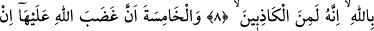

ZİNÂ İSNÂDINDA
BULUNMANIN CEZÂSI
4. Namuslu kadınlara zinâ isnâdında bulunup, sonra (bunu isbat için) dört şâhid
getiremeyenlere seksener sopa vurun ve artık onların şâhidliğini hiçbir zaman
kabul etmeyin. Onlar tamamen günahkârdırlar.
5. Ancak bundan sonra tevbe edip ıslah olanlar müstesnâdır. Allah çok bağışlayıcı
ve merhametlidir.
6. Eşlerine zinâ isnâdında bulunup da kendilerinden başka şâhidleri olmayanlara
gelince, onların her birinin şâhidliği, kendisinin doğru söyleyenlerden olduğuna dâir
dört defa Allah adına yemin ederek şâhidlik etmesidir.
7. Beşinci defa da, eğer yalan söyleyenlerden ise Allah’ın lânetinin kendi üzerine
olmasını dilemesidir.
8-9. Kadının, kocasının yalan söyleyenlerden olduğuna dâir dört defa Allah adına
yemin ve şâhidlik etmesi, beşinci defa da, eğer (kocası) doğru söyleyenlerden ise
Allah’ın gazabının kendi üzerine olmasını dilemesi ondan cezâyı kaldırır.
10. Ya Allah’ın size bol lütfu ve merhameti bulunmasaydı ve Allah, tevbeleri
kabul eden hüküm ve hikmet sâhibi olmasaydı (hâliniz nice olurdu)!
“Namuslu kadınlara zinâ isnâdında bulunmak.” (atmak); esâsında ok atmak, taş
atmak gibi aynlar hakkında kullanılır. Kazf (Bir kadına zinâ suçu isnâd etmek) gibi
sövmekten kinâye olan sözlerde kullanılmaz. Çünkü (atmak), aslında mutlak olarak